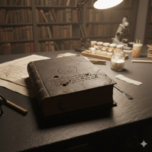

Elias Thorne
The Profile: Elias Thorne
Age: 34
Occupation: Archival Restorationist (or "Freelance Researcher")
Signature Look: A slightly oversized wool coat, ink-stained cuticles, and a pair of silver-rimmed glasses he constantly pushes up with his middle finger.
Core Attributes
TraitDescriptionThe Internal ConflictHe possesses an incredible memory for facts but struggles to remember how people feel. He treats social interactions like a puzzle he hasn't quite solved.The "Ghost" HabitHe has a tendency to enter and exit rooms so quietly that people often forget he’s there until he speaks.The ViceExpensive loose-leaf tea. He carries a small tin of it everywhere because "standard bags taste like paper and regret."
The Rookery Archive
The Rookery Archive
Location: Tucked away in a cobblestone alleyway in a city like London, Boston, or Prague—somewhere where the fog clings to the brickwork.
The Entrance: A heavy, scarred oak door with a brass plate that simply reads: Thorne & Co. – By Appointment Only.
Atmospheric Details
FeatureThe Sensory ExperienceThe AirCool, dry, and strictly climate-controlled. It smells of vanilla (degrading lignin), beeswax, and the sharp, metallic tang of iron gall ink.The SoundA low, constant hum from the dehumidifiers. The floorboards are reinforced with steel plates to hold the weight of the stacks, so they don't creak—they thud.The LightingLow-wattage UV-filtered bulbs. Elias works under a single, high-intensity task lamp that creates a circle of harsh white light on his workbench, leaving the rest of the room in "velvet" shadows.
Raven's Ledger

The object on Elias’s workbench is known in his ledger as The Vernazza Codex, but to the few who know of its existence, it’s simply called "The Raven’s Ledger."
It is a heavy, folio-sized volume bound in what Elias identifies as scuffed goatskin, dyed a black so deep it seems to absorb the light of his task lamp.
The Exterior
The Sigil: Centered on the front cover is a blind-stamped circular crest—a raven in mid-flight, clutching a skeleton key. There is no gold leaf or pigment; the image is burned into the leather, a technique that requires a terrifyingly precise amount of heat.
The Damage: The leather is spider-webbed with fine cracks, but most notable are the three distinct punctures near the spine. These aren't wormholes; they are jagged and deep, as if the book was once pinned to a wooden surface with iron spikes.
The Inscription: Below the sigil, a faint line of Latin is etched in a frantic, shaky hand. It hasn't been printed; it was scratched in with a blade. It translates loosely to: "The weight of the word is the soul of the witness."
The Construction
The Paper: This is where Elias’s professional curiosity turns into dread. The pages are not standard rag paper or vellum. They are thick, grey, and fibrous, with a texture that feels almost like cold skin.
The Ink: Under his microscope, Elias noted that the ink doesn't sit on the surface; it has bonded with the fibers in a way that suggests the paper was still wet when it was written upon. The ink has a faint iridescent sheen, like oil on water.
The Binding: The "sewing" of the book uses heavy, waxed cord that resembles gut. The spine is rigid, making a sharp, bone-like crack whenever the book is opened to a new section.
The "Anomalies"
Elias has discovered two things about this object that he hasn't yet written in his official notes:
Thermal Irregularity: The book is consistently four degrees colder than the ambient temperature of the room.
The Palimpsest: Using his UV light, Elias found that every page contains a hidden layer of text. While the visible writing is a mundane account of 18th-century shipping manifests, the UV layer appears to be a series of anatomical diagrams for things that do not exist.
"This isn't a book, Elias," his mentor once told him. "It’s a cage. Be careful what you do when you start 'restoring' the bars."
The Ink-Debt
The Theory of Script-Permanence
In the late 17th century, a radical sect of alchemists and printers known as the Libris Anima discovered a way to bind a "moment" to a page. They didn't just write down what happened; they used a specialized ink—The Vitriol of Memory—to trap the actual sensory experience of an event within the fibers of the paper.
Key Tenets of the Ink-Debt
The Weight of Truth: A "true" book (one containing an Ink-Debt) is physically heavier than it should be. The Vernazza Codex, for example, weighs nearly 12 kg, despite its size suggesting it should be half that. This extra mass is the literal "weight" of the secrets it holds.
The Bleed-Through: If an Ink-Debt book remains closed for too long, the history inside begins to "press" against the reality outside. This is why the Rookery Archive has reinforced steel floors—not just for the weight of the paper, but to ground the static charge of the compressed time within the books.
The Erasure: To destroy one of these books is to erase the event it contains from the collective memory of the world. If Elias were to accidentally "over-clean" a page or dissolve the wrong layer of ink, a piece of human history might simply vanish from everyone's minds simultaneously.
The Legend of "The Great Unwritten"
There is a persistent rumor among restorers about a final, massive volume that is completely blank. The lore suggests this book is the "Debt Collector." It travels through history, appearing in the collections of those who have "stolen" time by keeping these magical ledgers.
When the Debt Collector arrives, it begins to "siphon" the ink from the other books in the room. Once it is full, the archive—and the archivist—are wiped from existence, leaving behind only a stack of clean, white paper.
Elias’s Connection
Elias Thorne didn't leave his previous "consulting firm" because of a moral epiphany alone. He left because he realized they weren't just stealing artifacts; they were harvesting memories. He found a ledger with his own childhood home's coordinates in it, and the ink was still wet.
"We don't just preserve the past, Elias. We keep it from escaping." — A whisper he heard in the stacks during his first week at the Archive.
The Trembling Hand
Elias discovers that his mentor, Julian Vane, didn't actually retire—he began "editing" his own life out of the Archive’s records to escape a terminal illness.
The Hook: Elias finds a series of restoration logs in his own handwriting for books he has no memory of ever touching.
The Conflict: Every time Elias "fixes" a gap in these records, a week of his own childhood memories vanishes. He realizes he is being used as a biological "eraser" to scrub Julian’s crimes from history.
The Stakes: If Elias finishes the current restoration of The Vernazza Codex, he will successfully save the book but potentially delete his own identity entirely.
Prose Style Guide
1. The Tone: "The Clinical Gothic"
The narrative voice should mimic a forensic report written by a poet. Use precise, technical verbs for mundane actions to highlight Elias’s obsession with detail.
Avoid: "He looked at the old book."
Embrace: "He surveyed the volume’s topography, tracing the degradation of the leather with a gloved fingertip."
2. Sensory Hierarchy
Prioritize Texture and Smell over sight. In the basement of the Archive, lighting is poor, making the tactile world more prominent.
Keywords: Brittle, vellum, alkaline, musk, friction, grit, visceral, static.
The "Olfactory Layer": Describe characters by the scents they carry—ozone, stale tobacco, or the metallic tang of old coins.
3. Sentence Structure: "The Archival Rhythm"
In Moments of Focus: Use long, compound-complex sentences with multiple clauses to mirror the intricate process of restoration. This slows the reader down, forcing them into Elias's headspace.
In Moments of Stress: Use "The Staccato." Short, punchy fragments that mimic a heart rate monitor or the ticking of a clock.
Example: "The paste was too thin. The paper buckled. A hairline fracture appeared in the ink. Silence."
4. The "Ghost" Metaphor
Because the lore involves memories and "Ink-Debts," use metaphors related to translucency and permanence.
Refer to people as "palimpsests" (individuals with hidden layers).
Describe shadows as "ink-blots" or "stains."
Treat silence not as the absence of noise, but as a "blank page" waiting to be filled.
5. Dialogue Style: "The Information Filter"
Elias and his peers should speak with high precision and low emotional variance.
No Contractions: In formal or tense scenes, avoid contractions (e.g., "I do not know" instead of "I don't know") to give the dialogue a stiff, antique quality.
Deflection: When asked an emotional question, Elias should answer with a factual observation about his surroundings.